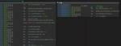

NFLabs. エンジニアブログ
https://blog.nflabs.jp/
セキュリティやソフトウェア開発に関する情報を発信する技術者向けのブログです。
フィード
Security Days Spring 2024（東京）に参加しました 1
1
NFLabs. エンジニアブログ
はじめに みなさん、こんにちは。教育ソリューション担当の亀岡です。東京で開催されたSecurity Days Spring 2024のDay3に参加してきました。午後から２時間ほどの参加でしたが、非常に勉強になった楽しいイベントだったので、お話ししたいと思います。f2ff.jp 参加のきっかけ NFLabs.ではセキュリティ研修を提供しています。私は主にオフェンシブ科目の講師を担当しておりますが、Offensive Securityにより興味を持ってもらったり、ペンテストスキルをもっと向上させるにはどうすればよいかと悩んだことがありました。blog.nflabs.jp そんな時にストーンビート…
3日前
当社協賛の2023年度『UEC Bug Bounty』 でNFLabs.賞を提供しました！！ 1
NFLabs. エンジニアブログ
はじめに みなさまこんにちは。NFLabs. の @strinsert1Na と黒川です。この度、株式会社エヌ・エフ・ラボラトリーズは 2023年度 UEC Bug Bounty に協賛し、電通大(UEC) のOBである筆者らとCTOの3名が表彰式に参加してきました。当社は、電気通信大学において実施される学生による学内情報セキュリティ検査コンテスト「UEC Bug Bounty 2023(2024/2/1-2/29開催、3/15表彰式)」に協賛します。https://t.co/xxCjTPq9R4特別賞としてNFLabs.賞を提供し、審査員として参加予定です。— 株式会社エヌ・エフ・ラボラトリ…
6日前

Cyber Apocalypse CTF 2024 - Rev Writeup -
NFLabs. エンジニアブログ
TL;DR 2024/03/09 ~ 03/14 にかけて行われた Cyber Apocalypse 2024: Hacker Royale の Writeup 記事です QuickScan, MazeOfPower の Rev. 問2つあります ctf.hackthebox.com はじめに 皆さまこんにちは @strinsert1Na という人です。Hack The Box が主催する CTF イベント『Cyber Apocalypse 2024: Hacker Royale』に、Team Enu で参加してきました。 Team Enu はNTTグループの社員で結成されたCTFチームであり…
9日前

NFLabs. Cybersecurity Challenge for Students 2023を開催しました【Writeup賞受賞者を発表します】
NFLabs. エンジニアブログ
本記事では、先日NFLabs.が開催した、セキュリティ技術を競うセキュリティチャレンジコンテスト「NFLabs. Cybersecurity Challenge for Students 2023」の様子を紹介します。また、競技後に募集したWriteup賞の発表も行います。
3ヶ月前
NFLabs. Cybersecurity Challenge for Students 2023 DFIR hard 作問者 Writeup
NFLabs. エンジニアブログ
この記事は NFLaboratories Advent Calendar 2023 14 日目の記事です。 はじめに 問題紹介 解法 pcapファイルの解析 80/tcp 443/tcp 21/tcp, 37039/tcp, 59847/tcp Windows イベントログの解析 PowerShellのコードの解析 イベントログから見つかったコード lib PowerShell解析結果のまとめ 暗号化されたトラフィックの復号 FTPで転送されたファイルの復号 dumpファイルの解析 パスワードクラック 余談と反省 おわりに
3ヶ月前
5分でわかるプロダクト（トレーニングプラットフォーム）の紹介
NFLabs. エンジニアブログ
はじめに この記事は、NFLaboratories Advent Calendar 2023 - Adventar 13日目の記事です。こんにちは。NFLabs. CTO/プロダクトマネージャーの松木です。この記事では、当社が開発中のセキュリティ技術トレーニングプラットフォームについて紹介します。 はじめに プロダクトコンセプト 開発ヒストリー 開発チームの紹介 今後の展望 さいごに プロダクトコンセプト 私たちは、バリバリ手が動くセキュリティエンジニアになりたいけれど、業務に必要なスキルの身につけ方がわからない人向けのオンライン学習サービスを開発しています。セキュリティの業務は広範な知識とス…
3ヶ月前
国家 APT が使用する RAT 解析への挑戦 - NFLabs. Cybersecurity Challenge for Students 2023 作問者 Writeup (Malware 編) -
NFLabs. エンジニアブログ
2023/11/22 ~ 11/27 の5日間にかけて行われた学生限定のCTFライクなセキュリティイベント「NFLabs. Cybersecurity Challenge for Students 2023」の作問者Writeupです。チャレンジに参加していない方でも、マルウェア解析の学習をしている方の参考にもなると思います。
3ヶ月前
OffSec資格 「OSED」合格体験記
NFLabs. エンジニアブログ
はじめに この記事は、NFLaboratories Advent Calendar 2023 - Adventar 11日目の記事です。 皆様、毎日お疲れ様です。教育ソリューション担当の番場です。 2023年11月にOffSec社の提供している資格であるOSEDを取得したので、当資格の概要や取得するまでの道のりを紹介したいと思います。 OffSecの関連資格に興味がある。 OSED受験を考えているが、日本語の参考記事が少ない。 どうすれば取得できるのか？どのような技術を身につけられるのか？具体的に知りたい。 などの方は是非参考にしてみて下さい。 目次 はじめに 目次 OSEDとは？ EXP-3…
3ヶ月前
NFLabs. Cybersecurity Challenge for Students 2023 Malware medium 作問者 Writeup
NFLabs. エンジニアブログ
この記事は NFLaboratories Advent Calendar 2023 10 日目の記事です。 はじめに ソリューション事業部の齋藤です。 この記事は 2023/11/22 ~ 2023/11/27 で開催された学生オンリー CTF イベント NFLabs. Cybersecurity Challenge for Students 2023 で自分が作問した Malware ジャンルの medium 難易度の問題「sneak」の Writeup です。 このイベントは通常の CTF のような pwn, web, crypto ジャンルの問題ではなく、インシデントレスポンスや脆弱性診…
3ヶ月前
Microsoft Sentinelの機能と費用について
NFLabs. エンジニアブログ
はじめに Microsoft Sentinelについて Workbooks(ダッシュボード)の活用 Automation(自動対処)の活用 見積もりと実際の費用について 個人的に興味がある機能について まとめ はじめに このブログは、NFLaboratories Advent Calendar 2023 - Adventar 9日目のブログです。 皆さんこんにちは。研究開発部の北村です！ 今回のブログではMicrosoft Sentinelの機能と費用感についてご紹介し、主にSentinelを使ってログの収集や活用をしたいと考えている方向けの情報を発信します。 Microsoft 365 E5…
3ヶ月前
CTMPで学ぶ、脅威モデリング
NFLabs. エンジニアブログ
はじめに この記事は、NFLaboratories Advent Calendar 2023 - Adventar 8日目の記事です。 こんにちは、研究開発部の沖田です。 本年受講したHysn Technologies Inc社が提供する脅威モデリングを学べるe-Learningコース「CTMP」について、当コースの内容と脅威分析／脅威モデリングに関するいくつかのトピックについて記載させていただきました。 www.practical-devsecops.com 目次 はじめに 目次 脅威モデリングの定義 CTMPとは 試験について e-Learningについて シラバス コンテンツについて 受…
3ヶ月前
認定Kubernetes資格3種（CKAD, CKA, CKS）を制覇しました
NFLabs. エンジニアブログ
この記事は、NFLaboratories Advent Calendar 2023 7日目の記事です。こんにちは、ソリューション事業部セキュリティソリューション担当の大沢です。 今年の10月から2ヶ月ほどKubernetes認定技術者試験の学習をしており、先日3種の資格（CKAD, CKA, CKS）を無事に取り切れたので、今回はその勉強方法や実際の試験での注意事項について書いていこうと思います。本当はアドベントカレンダーで「資格取得しました記事」は書きたくなかったのですが、シングルタスク人間にはアドベントカレンダーの仕込みとの両立は難しく、このような形になってしまいました。 ただ、この資格は…
3ヶ月前
NFLabs.セキュリティ研修のすゝめ（＋OSCP合格体験記）
NFLabs. エンジニアブログ
はじめに この記事は、NFLaboratories Advent Calender 2023 - Adventor 6日目の記事です。 教育ソリューション担当の迫本です。 NFLabs.では、セキュリティ人材を育成するためのセキュリティ研修を提供しています。 本記事では、研修内容や研修生として研修を受講して感じたこと、おまけにOSCPを取得したので、あわせて紹介します。 目次 はじめに 目次 セキュリティ研修とは？ 面白かった研修 擬似マルウェア開発 マルウェア解析 セキュリティ研修の魅力 OSCP合格体験記 OSCP受験経緯 OSCPとは？ PEN-200の内容 試験概要 合格までの道のり …
3ヶ月前
脱サイロ化とスピードを両立させるコードレビューシステム
NFLabs. エンジニアブログ
はじめに 開発チームについて チームメンバー 技術スタック フロントエンド バックエンド 課題 レビューの遅延・レビュー依頼が溜まる レビュー時の手戻り レビュアーの偏りと知識・スキルのサイロ化 レビュアー/レビュイーの心理的安全性の低下(気疲れ) 改善策 レビューの優先度を自分のタスクよりも上げる 大きな手戻り防止のための段階的なレビュー DB設計 UIデザイン ランダムアサインによるレビュー機会の平準化とスキルトランスファー レビューコメントへのプレフィックス付与による温度感の可視化 更なる効率化と品質向上を目指して Text Lint AI (ChatGPT/Cursor) 社内勉強会で…
3ヶ月前
Microsoft Entra IDの特権ロール管理～Group向けPIMの設定、運用、監査～
NFLabs. エンジニアブログ
はじめに この記事は、NFLaboratories Advent Calendar 2023 - Adventar 4日目の記事です。こんにちは、研究開発部の橋本です。本日は「Group向けPIM」を利用したMicrosoft Entra IDの特権ロール管理について紹介します。 はじめに Why「Group向けPIM」？ 「Group向けPIM」とは 「ロール割当可能なグループ」とは 「最小特権の原則」とは 設定例 特権ロールを付与したグループの作成 「Group向けPIM」の有効化 「Group向けPIM」の設定 「Group向けPIM」の対象メンバー追加 運用例 アクティブ化申請 アクテ…
3ヶ月前
OpenVPN管理サービスを作ってみた
NFLabs. エンジニアブログ
OpenVPN管理サービスを作ってみた OpenVPN管理サービスを作ってみた OpenVPN採用の経緯 設定ファイルの生成 APIの設計 ovpnファイルを生成 ovpnファイルを取得 ovpnファイルを削除 Fast APIを使った実装 終わりに はじめに この記事は、NFLaboratories Advent Calendar 2023 - Adventar 3日目の記事です。 みなさん、こんにちは。研究開発部で製品開発を担当している小川です。 突然ですが、みなさんは先日弊社が開催した学生限定イベントNFLabs. Cybersecurity Challenge for Students…
3ヶ月前
Azure OpenAI + Add Your Dataによる自社データを基に回答可能な閉域AIサービスを試作したお話
NFLabs. エンジニアブログ
はじめに 目的 実現イメージ Azure OpenAI Serviceについて 前提条件 Azure OpenAIの構築 Add Your Dataについて 指定可能なデータソース Azure AI Searchの導入 Azure AI Document Intelligenceの導入 日本語ドキュメントのインデックス作成 Add Your Dataのテスト プライベートアクセス（閉域網化）の実現について 利用する各サービスの費用感について おわりに はじめに こんにちは。研究開発部の待井と申します。 本記事はNFLaboratories Advent Calendar 2023の2日目となり…
4ヶ月前
Microsoft Entra ID と Microsoft Intune を利用したLAPS
NFLabs. エンジニアブログ
はじめに この記事は、NFLaboratories Advent Calendar 2023 - Adventar 1日目の記事です。こんにちは。研究開発部 システム&セキュリティ担当の豊田です。先日、2023 年 10 月 23 日の時点で一般提供されたMicrosoft Entra ID と Microsoft Intune のサポートを備えた Windows LAPS（以下、LAPS）について紹介します。 どんな記事か LAPSとはLocal Administrator Password Solutionの略称です。 この記事では、Microsoft Entra ID と Microso…
4ヶ月前
今年も愛媛大学にて出張講義を実施してきました！
NFLabs. エンジニアブログ
みなさん、こんにちは。教育ソリューション担当の亀岡、三村です。 昨年、愛媛大学で実施したセキュリティの出張講義が好評で、今年も攻撃者目線でのセキュリティを学ぶ重要性やセキュリティの魅力を広めるべく、11月22日に愛媛大学の学生に向けて「Offensive Security入門」の講義を実施しました。 背景の進展 昨年度と同様、セキュリティ人材の発掘と育成を目的に攻撃者目線でのセキュリティを学ぶ重要性やセキュリティの魅力をお伝えしました。本件以外にも新たに長崎大学で講義を実施したり（長崎大学の学生にマルウェア解析の講義を行いました - NFLabs. エンジニアブログ）、高専や大学のみならず小学…
4ヶ月前
NFLabs.のセキュリティ研修講師の業務を見てみよう
NFLabs. エンジニアブログ
こんにちは。教育研修事業を担当している片山です。今日は私が行っている業務について紹介していきます。大学や高専での講義やNTTコミュニケーションズ向けのセキュリティイベント等はいくつかブログで紹介しましたので、メイン業務である教育研修に関する業務を詳しく見ていきます。本題に入る前に、前提としてNFLabs.の研修の建付けについて説明します。NFLabs.の研修は主に3つに分かれており、PythonやWindows APIを使った開発科目、ペネトレーションテストをはじめとするオフェンシブ科目、マルウェア解析などを行うディフェンシブ科目から構成されています。私はオフェンシブ科目を担当しているので、こ…
4ヶ月前
AWSでのCTFd構築職人マニュアル【完全版】~IaCから詳細設定まで~
NFLabs. エンジニアブログ
CTFd環境構築についてAWS CloudFormationを用いたIaC化から、CTFdの詳細設定までを詳しく紹介します。CloudFormation Templateも公開しています。
5ヶ月前
【2023年夏】現場受け入れ型インターンシップを実施しました ‐ 2！
NFLabs. エンジニアブログ
こんにちは！ 教育ソリューション担当の鈴木です。教育ソリューション担当では9/4～9/15の2週間で「現場受け入れ型インターンシップ」を実施していました。 ひとつ前のこちらの記事は、研究開発部で実施したインターンシップについての記事となっています。 blog.nflabs.jp今回のインターンシップで実施していただいた内容は、セキュリティ教育用プラットフォームで使用する学習コンテンツの開発です。 参加していただいた原田さんの参加経緯や業務を体験した感想をご紹介します！ 原田さんの体験記 はじめに こんにちは。インターン生の原田啓佑です。今回9/4～9/15の期間でエヌ・エフ・ラボラトリーズの「…
5ヶ月前
【2023年夏】現場受け入れ型インターンシップを実施しました！
NFLabs. エンジニアブログ
研究開発部で製品開発を担当している小川です。 エヌ・エフ・ラボラトリーズでは2023年8月28日から9月8日までの2週間、「現場受け入れ型インターンシップ」を実施しました。 インターンシップには2名の学生が参加し、当社で開発しているセキュリティ教育用プラットフォームの開発に取り組んでいただきました。 参加したお二人からの参加したいと思った経緯や2週間の業務を体験してみた感想をご紹介します。 池宮さんの体験記 プロフィール 初めまして。インターン生の池宮卓です。 私は長崎県立大学の情報セキュリティ学科に所属しており、日々セキュリティについて勉強しています。 インターンシップ参加目的 私の所属する…
6ヶ月前
短期インターン（DEF CON CTF Qualifier 2023挑戦）のフォローアップイベントを開催しました！
NFLabs. エンジニアブログ
研究開発担当の橋本です。エヌ・エフ・ラボラトリーズでは、2023年5月にNTTグループ有志のCTFチーム（Team Enu）のメンバーと協力して、DEF CON CTF Qualifier 2023に挑戦する実践型インターンシップを開催いたしました。5月のインターンシップはCTFに特化していたため、参加者と「ゆったりと懇親を深めながら当社のお仕事を体験頂く」ためのフォローアップイベントを企画しました。以下、先日8月25日に東京・大手町の大手町プレイスビル（※）で開催されたフォローアップイベントの様子をご紹介します！※当社入居ビル。今回のイベントは親会社であるNTTコミュニケーションズの共用スペ…
7ヶ月前
Hack The Box Business CTF 2023 Sonic Infiltrator
NFLabs. エンジニアブログ
こんにちは、今年の6月から入社しました研究開発部のskskです。7月に弊社のエンジニア14名で、Hack The Box 主催の Hack The Box Business CTF 2023に出場していました。今回のCTFは、982チーム、5118人が参加していて、開催期間は2日半と少し長めです。各問題について少し触れると、一番正答が少なかった問題は、CloudのEmitとPwnのSonic Infiltratorで6 solvesでした。2位は、PwnのPAC Breakerで8 solvesです。3位は、PwnのDevice Controlで11 solvesです。4位は、Fullpwnの…
7ヶ月前
長崎県長与町の小学生の親子向けにセキュリティの授業を実施してきました
NFLabs. エンジニアブログ
教育研修事業を担当している片山です。 7月22日に長崎県長与町での小学生の親子向けに開催されたプログラミング教室でセキュリティの授業を実施してきました。プログラミング教室は2時間×3回(3週に渡り計6時間)の構成で、22日は午前と午後に分かれて、それぞれ8組の親子向けに実施しました。このプログラミング教室の初回の1時間目で、NFLabs.がプログラミングをしていくうえで必要なセキュリティの授業を行い、その後は長崎県立大学がSPIKEプライムを利用したレゴプログラムを実施していくという流れです。 セキュリティ講義 セキュリティ講義では、「プログラミングで気をつけること」と題してインターネットの危…
8ヶ月前
長崎大学の学生にマルウェア解析の講義を行いました
NFLabs. エンジニアブログ
はじめに こんにちは。ソリューション事業部 教育ソリューション担当の西田、三村、黒川、吉武です。 2023年6月2日～7月7日にかけて、長崎大学情報データ科学部の小林研究室・荒井研究室所属の学生およそ17名に向けて全6回のセキュリティ講義を実施しました。本記事では、その状況や具体的な実施内容、感想について紹介します。 講義の概要 「学生向けセキュリティ講義 マルウェアの表層・動的解析 - Windows OS -」という題目で、全6回にわたりハンズオンを交えたマルウェアの表層解析・動的解析について講義を行いました。 メイン講師は西田、サブ講師は三村、黒川、吉武が担当しました。第2回～第6回はオ…
8ヶ月前
Pydanticで始めるイミュータブルクラス駆動開発
NFLabs. エンジニアブログ
はじめに こんにちは！NFLabs. 研究開発部の林です。普段はセキュリティ教育プラットフォームの開発をしています。 今回はセキュアコーディングの重要な要素である「バリデーション(入力検証)」に関連して、PythonのPydanticライブラリにフォーカスしてお話します。 Python界隈では、昨今、型ヒントやFastAPIの普及に伴い、型の重要性や有用性が徐々に認識されつつあるかと思います。 それに伴い、バリデーションライブラリのデファクトスタンダードの一つであるPydanticの注目度も上がってきたと感じています。 Pydanticは実行速度の速さを特長として挙げていますが、Pydanti…
8ヶ月前
【25卒向け】 「専門は違うのですがセキュリティのお仕事ってできますか?」系の就活でよくある質問に現場のエンジニアがなるべく丁寧に回答する話
NFLabs. エンジニアブログ
本記事はエンジニア向けの記事でなく、セキュリティエンジニアをキャリアパスの一つに考えている求職者、特に新卒就活生に向けた記事になります。該当する方や、OB・OGとしてアドバイスをする機会がある方は一読してみてください。また、夏インターンの募集もしています。8/10 までエントリー受けてつけていますのでご応募お待ちしています!!
9ヶ月前
Azure OpenAI Serviceでマッチングアプリの返信を自動生成してみた
NFLabs. エンジニアブログ
はじめに こんにちは。NFLabs. 研究開発部のkuriです。普段はセキュリティトレーニングプラットフォームの開発業務に携わっています。 先日、NTT Generative AI Hack daysというイベントに参加してきました。このイベントは、NTT・Micsoroft合同のGenerative AIをテーマとする、Azure OpenAI Serviceを使ったハッカソンイベントです。 本稿では、Azure OpenAI Serviceの基本的な使い方と、ハッカソンで作成したWebアプリを紹介します。 はじめに Azure OpenAI Serviceとは Azure OpenAI S…
9ヶ月前